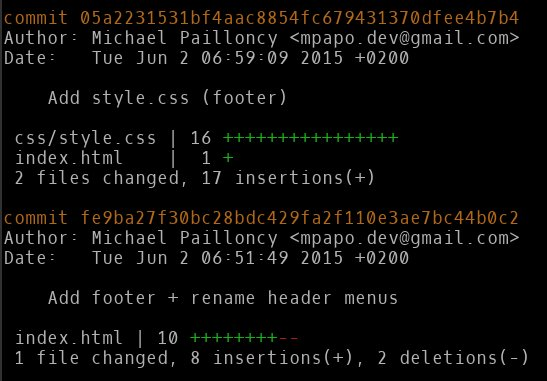

Prerequisites
|
Important
|
See the prerequisites and major git commands help |
1. The .git directory
1.1. The .git directory
|
Tip
|
Use the provided documentation if needed |
1.1.1. ls .git!
-
Create a new Git repository (wherever you want)
git init repo && cd repo && git commit -m 'Initial' --allow-empty
-
List the .git directory content and have a look.
-
Create a branch newbranch
git branch newbranch
-
Checkout that branch, then have a look inside
.git/logs/:-
What is this directory used for?
-
Which git command does actually use that directory? (hint: use
git help -aif needed to find out, thengit help <COMMAND>)
-
-
Have a look inside
.git/refs
ls -l .git/refs/*/*-
What is this directory used for?
1.1.2. Playing with the data model
In a Git repository, execute precisely the following commands to create a commit with a new file:
echo "Hi Eclipse Con France 2015" > pof
git add pof
git commit -m "commit done"If your OS is Linux/Mac based, execute the following command :
echo -e "blob 27\0Hi Eclipse Con France 2015" | shasum|
Caution
|
For Windows and some Mac users, this command may not be available. No worries: for the record, it shows that git generates a SHA1 of the committed files to store them in the repository. This command should display 64e3fc24e6ed73f1af43ae4e0411d80c10c4d0f7.
If you do not have the shasum command, don’t run the command above and just go ahead with the following.
|
Then execute :
git ls-tree newbranch-
What’s the role of the ls-tree command?
-
Compare the ls-tree output and the echo command output above. Conclude about how Git stores blobs.
-
Create a new directory, copy the
poffile inside it withpifname,git addthe whole directory and commit it.
mkdir newdirectory
cp pof newdirectory/pif
git add newdirectory
git commit -m "Added the new subdirectory"-
Use
git ls-tree newbranchagain to understand how the storage works (cf. slides) -
Use
git ls-treeon the subdirectory to display its content (hint: ls-tree takes a hash as parameter, not directory name).-
What’s the sha of the
piffile in that directory ?
-
|
Note
|
There’s two categories of Git commands:
porcelain (example: git checkout) and
plumbing (example: git ls-tree). These categories actually respectively relate to high-level (user-oriented) and low-level commands.
|
|
Tip
|
To remember which is one: just remember, in toilets, are you more in contact with the porcelain or the plumbing? |
2. Twiddling with the history

2.1. Rewriting
|
Caution
|
For this workshop, you need to use repository git-next-level-workshop-rewriting.git (workshop resources).
|
2.1.1. Playing with rebase
Basics
See rebase -i basics first and along the lab if needed.
Let’s start
-
Open your shell,
cdto the git workshop repository, list all commits.
|
Caution
|
Respect the steps order of the following. If you don’t, you may change commit SHA-1 and not be able to find the SHA-1 given below. |
Easy ramp up
-
The three last commits ("Add jumbotron (partXXX)") are not consistent separately, merge these commits to create only one (and remove the useless (partXXX) part of the commit log).
-
(For reference: first commit SHA-1 shortened version =
fc3034f86)
-
A bit harder
 Commits
Let’s fix them! |
-
Start an interactive rebase
-
Edit the "Add footer + rename header menus" commit to split it in two distinct commits (hint:
git reset HEAD~1andadd -p):-
A first one with header
-
A second one with the footer part
-
-
Then, just merge the "Add style.css (footer)" commit into that second one you just created
|
Tip
|
you can choose to do the exercise above in one go, or do it in two successive interactive rebases. |
Smoothy landing
-
Commit
dbb8f26has a spelling error. Fix it.
2.1.2. Playing with dangling commit
Execute this command :
git checkout fe9ba27This commit has been modified during previous actions. But you can still check it out.
-
How does Git keep track of it?
-
Explain why.
2.1.3. Playing with "cherry-pick"
The current repository has a branch named "header-black-experiment". Execute :
git checkout header-black-experiment-
List all commits.
-
Using cherry-pick command, try to retrieve commit edcdd0a on the master branch
3. Finding a needle in a…

|
Note
|
for this workshop, you need to use repository "git-next-level-workshop-bisect.git" (workshop resources). |
3.1. Find the bug !
Open index.html of your repository and click to the button. A bug has been discovered !
3.1.1. Starting bisect
Begin the bisect action with :
git bisect startSo that Git can begin, you must declare a good and a bad commit to start the bisection :
git bisect bad HEAD
git bisect good <COMMIT_THAT_DOES_NOT_HAVE_THE_BUG>After executing these two commands, Git is in detached mode. Your are now positioned on a commit calculated by dichotomy of the two commits specified on previous commands.
3.1.2. Declaring bad and good commits
Re-open the index.html and see if the bug is still present.
If this is the case, declare it as a bad commit :
git bisect badIf not, declare it as a good commit :
git bisect goodGit automatically moves the repository state to another commit so that you can try to reproduce the bug, declare it as a bad or a good commit, and so on.
Continue previous operations until that you find the bug which has introduced the regression.
|
Tip
|
If retrieving the bug is "scriptable", you can find the bug auto-magically using git bisect run <cmd>. See git help bisect for details.
|
4. Bonus
4.1. Bonus Track
|
Important
|
Do that part only if you finished everything above. |
4.1.1. Filter-branch
|
Note
|
for this workshop, you need to use repository "git-next-level-workshop-filter-branch.git" (workshop resources). |
|
Important
|
filter-branch rewrites all commits of your repository. Be sure to be aware of impacts. |
Remove file from history
A password.txt file has been commited from the beginning of the history, using filter-branch, try to completely remove this file from this history.
|
Note
|
you can use either --tree-filter or --index-filter options of filter-branch but the last one is recommended
|
Changing author email of each commit
Your repository is ready to be share with the open-source community, yeah !
But you have completely forgotten to set your personal email before committing your files…
Using filter-branch, try to change all commit to set your personal email.
|
Note
|
you can use either --commit-filter or --env-filter options of filter-branch.
|
|
Note
|
Git keeps track on all commit ! If you have trouble with filter-branch, you can restore the last state of your repository using git reset --hard refs/original/refs/heads/master
|
4.1.2. Garbage collect all the things
|
Note
|
Having a GC is very hype those days. Git has one too! Git GC will actually execute automatically under some conditions (too many loose/dangling objects, too many branches/tags…). You generally won’t run it manually like in the next part. |
-
Execute
ls .git && ls -l .git/refs/headsat your test repository root -
Execute
git gc --aggressive --prune=now -
See what it changed. Explain the goal of the created file.
4.1.3. Interactive staging
Through command line and git add -p
-
Create a repository with an initial empty root commit
Execute the following:
git init interactivestaging && cd interactivestaging && git commit --allow-empty -m "Initial commit"
echo -e "Some line\nfollowed by that one, more long\n\nanother one\n\nand another, biting the dust, for one.\n" > thefiletostage
git add thefiletostage && git commit -m "File init"
echo -e "sometext before\n\n$( cat thefiletostage )and some after\n and again" > thefiletostageThen git diff should show the following:
diff --git a/thefiletostage b/thefiletostage
index 8362737..b4fcccb 100644
--- a/thefiletostage
+++ b/thefiletostage
@@ -1,7 +1,9 @@
+sometext before
+
Some line
followed by that one, more long
another one
-and another, biting the dust, for one.
-
+and another, biting the dust, for one.and some after
+ and again-
use
git add -pto do two commits:-
one for the modification at the beginning of the file
-
one for the modification at the end of the file
-
Use Eclipse EGit
Goal: Redo the Through command line and git add -p exercise, but this time staging interactively using EGit.
Create a new repo and execute the following commmands:
git init interactivestaginggui && cd interactivestaginggui && git commit --allow-empty -m "Initial commit"
echo -e "Some line\nfollowed by that one, more long\n\nanother one\n\nand another, biting the dust, for one.\n" > thefiletostage
git add thefiletostage && git commit -m "File init"
echo -e "sometext before\n\n$( cat thefiletostage )and some after\n and again" > thefiletostage-
Import that directory as an Eclipse project
-
Create a file .gitignore to ignore the .project and .classpath
-
With modern build tool like Maven or Gradle, and associated Eclipse tooling like M2E, you should generally not commit those files into your repository
-
Appendix
rebase -i basics
|
Tip
|
Most instructions below require the use of: |
git rebase -i <COMMIT SHA>|
Tip
|
=== When doing an interactive rebase [1], read what’s displayed inside your editor |
$ git rebase -i HEAD~
pick 3262d5a ...
# Rebase 0345973..76e0b82 onto 0345973
#
# Commands:
# p, pick = use commit
# r, reword = use commit, but edit the commit message
# e, edit = use commit, but stop for amending
# s, squash = use commit, but meld into previous commit
# f, fixup = like "squash", but discard this commit's log message
# x, exec = run command (the rest of the line) using shell
#
# These lines can be re-ordered; they are executed from top to bottom.
#
# If you remove a line here THAT COMMIT WILL BE LOST.
#
# However, if you remove everything, the rebase will be aborted.
#
# Note that empty commits are commented ouRead what’s above. You can reorder commits by just moving lines up or down, or removing commits by just removing a whole line.
In general, read what Git displays. For example, when you edit a commit, Git tells you what/how to
do most of the things (git rebase --continue, etc.)
===
|
Caution
|
git rebase -i will display commits in chronological order, contrary to git log
|
Rolling back if required
If you want to just rollback any modification you made: use reflog, find the previous correct HEAD SHA, then reset your working copy to it
$ git reset --hard <SHA>
For example, if you want to rollback everything to the initial state, just run
$ git reset --hard fc30